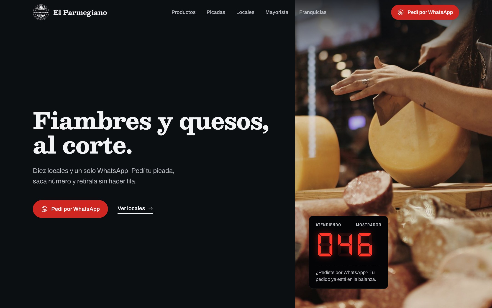
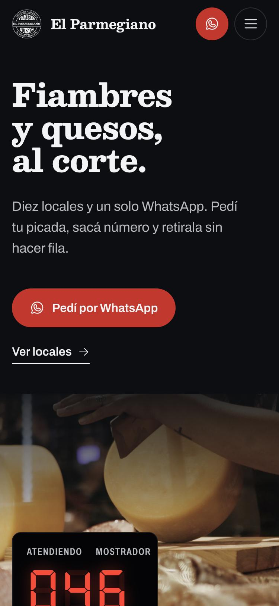
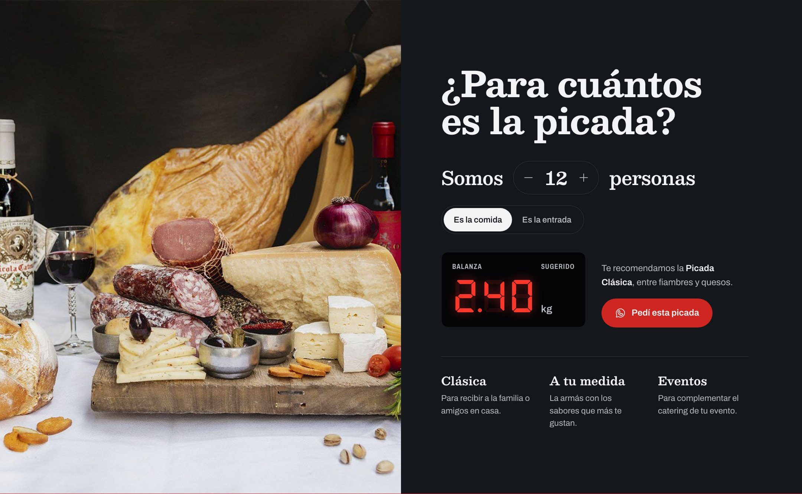
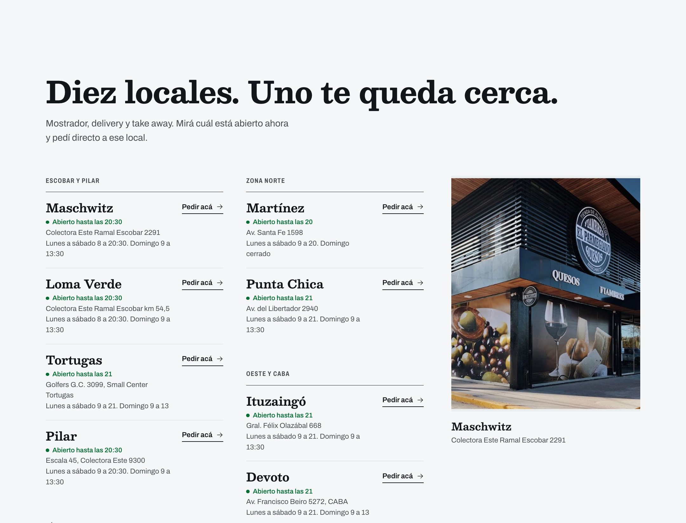
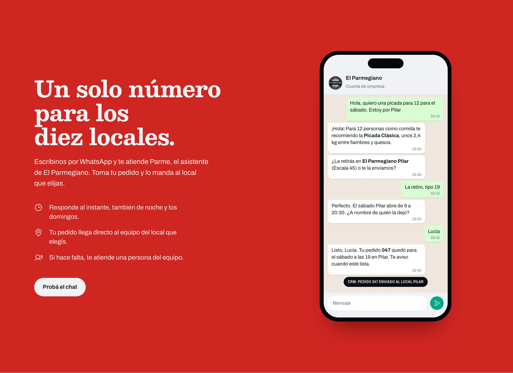

Del mostrador al WhatsApp.
Rediseño del sitio web, CRM central y un asistente de WhatsApp para los diez locales de El Parmegiano.
Propuesta de Spark, octubre de 2026
AtendiendoMostrador
888047
Rediseño del sitio web, CRM central y un asistente de WhatsApp para los diez locales de El Parmegiano.
Propuesta de Spark, octubre de 2026


Veinte años. Diez locales, de Zárate a Devoto. Una distribuidora mayorista con frío propio y la distribución oficial de La Paulina en Pilar. Todo coordinado desde la casa central en Escobar.

elparmegiano.com, captura del 22 de octubre de 2026
Cada local atiende con su propio WhatsApp o teléfono, desde el celular del equipo. Ahí pasa la venta, y casa central no la ve.
Después de las 21, los domingos a la tarde y al mediodía en Zárate y Campana no responde nadie. Los contactos quedan en diez celulares y no hay forma de saber cuántas consultas se pierden.
Estética a la altura de los locales, pensado para el celular, con locales en vivo y pedidos por WhatsApp en cada botón.
AtraeParme responde a cualquier hora, toma pedidos y picadas, los manda al local correcto y ordena a mayoristas y franquicias.
AtiendeEscobar ve todas las conversaciones, pedidos y oportunidades de los diez locales en un solo lugar, con números por local.
OrdenaNegro de fachada, la tipografía del logo y un solo acento: el rojo del turnero del mostrador.



El cliente dice cuántos son y ve los kilos sugeridos en un display de balanza. Un toque y la pide por WhatsApp.

Agrupados por zona, con "abierto ahora" según el horario real y "Pedir acá", que abre el chat en ese local.
Una picada para 12, retiro en Pilar a las 19. El pedido llega al equipo del local y queda registrado en el CRM.
En el mockup el chat se puede probar en vivo.

Aprende el catálogo, los horarios, las zonas de envío y el tono de la marca. No inventa precios: lo que no sabe, lo pasa a una persona.
WhatsApp, el sitio o Instagram
Asistente con IA, las 24 horas
Todo queda en el CRM: contacto, conversación, local, etapa y responsable.
Una sola plataforma con permisos por rol. Casa central administra la marca, el catálogo y el asistente; cada local opera sus pedidos.
Un WhatsApp de El Parmegiano en el sitio, Instagram y los locales. Parme detecta la zona y deriva al local. Cada franquiciado ve solo su bandeja.
Imagen de marca unificada.
La base de clientes es de la marca.
Números comparables entre locales.
Cada local conserva su número actual, conectado a la misma plataforma y al mismo asistente.
Cero cambio para el cliente de siempre.
Diez conexiones para mantener.
La marca sigue repartida en diez números.
Se pueden combinar. Cada cambio de número se coordina con el local para no cortar la atención.
Catálogo, precios, horarios, zonas de envío, tono y fotos. Definimos el modelo de números.
Diseño final y desarrollo del sitio. Pipelines, usuarios y tableros.
Parme en Maschwitz y Pilar, cerca de casa central. Ajustamos con conversaciones reales.
Despliegue a toda la red, capacitación de cada equipo y lanzamiento del sitio.
Después, mejora continua mensual: respuestas nuevas, campañas, reportes y ajustes del sitio.
Cuánto tarda en responderse una consulta, por local y por horario.
Cantidad y monto estimado de pedidos y picadas por local.
Consultas atendidas con el local cerrado, que hoy se pierden.
Conversaciones cerradas sin que intervenga una persona.
Contactos nuevos, en qué etapa están y quién los sigue.
Clientes identificados por local, listos para campañas.

Una reunión de relevamiento en casa central y, en treinta días, Parme atiende en dos locales con clientes reales. La propuesta económica la armamos a medida después de esa reunión.
sparkdigital.agency
cal.com/spark/intro